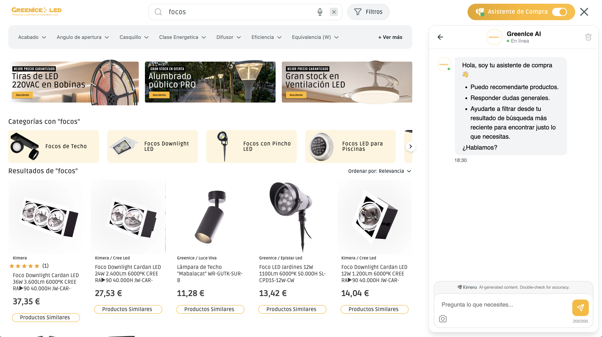
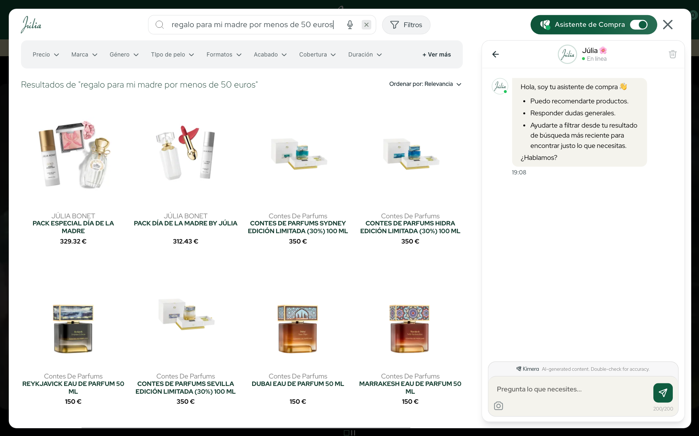
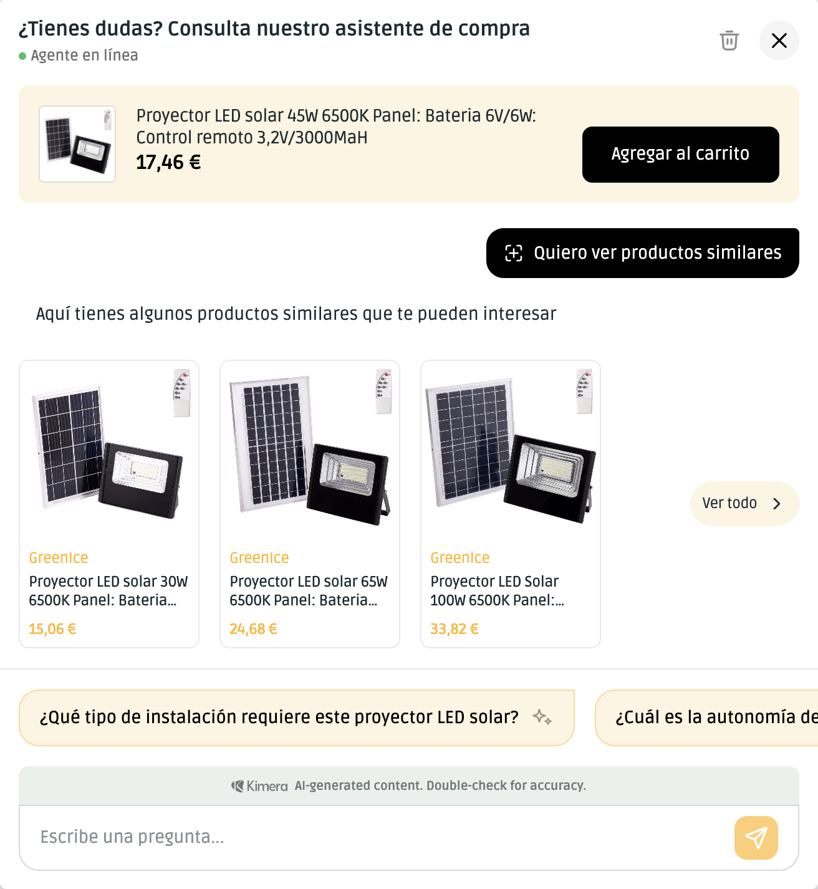
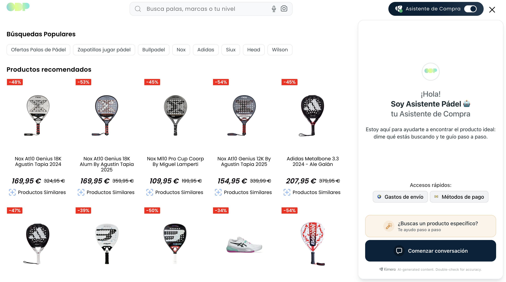
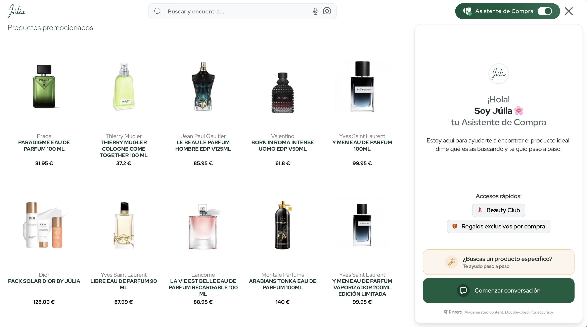

Reinventing how people search and shop online
At Kimera Technologies I design the search engine that understands your customers. An AI-powered product that is changing the way people search in traditional online stores. Shoppers simply describe what they need, in their own words. It is a genuinely innovative product in constant evolution: every iteration makes it better, smarter and more powerful.

Search that understands people, not keywords
Traditional store search expects shoppers to guess the right keywords, and punishes them with zero results when they don't. Kimera flips the logic, and the engine understands the intent, the occasion and the budget, returning products that actually make sense. That shift is redefining what a search bar can be.
- Natural language queries instead of exact keyword matching
- Understands products from text and images, with no manual setup
- Zero-results dead ends replaced by helpful, guided alternatives


A shopping assistant that talks with you
Beyond the search bar, I design the conversational AI shopping assistant: a guide that recommends products, answers questions and refines results through dialogue, asking clarifying questions the way a great shop assistant would. Reasoned recommendations reduce indecision and turn browsing into finding.
- Dialogue-driven discovery for shoppers who don't know how to ask
- Clarifying questions that narrow thousands of products to the right few
- Transparent, reasoned recommendations that build trust in AI
Designing a product in constant evolution
As Senior Product Designer I own the end-to-end search experience: results, filtering and zero-results flows, the conversational assistant, and a scalable design system that lets one product live seamlessly inside hundreds of different stores. I prototype intent-driven commerce hand in hand with developers, shipping, measuring and improving in short cycles, so the product gets more powerful with every release.
- Search results, filtering and zero-results experience design
- Conversational assistant, UX flows, tone and interaction patterns
- A white-label design system that adapts to any brand's identity

Always improving
Built to evolve
Kimera is never finished. The product learns, the team iterates, and the experience gets sharper every single week.
Listen
Real queries from real shoppers reveal how people naturally ask for products.
Design
Turning insights into flows and prototypes for search, filtering and conversation.
Ship
Working hand in hand with developers to release improvements continuously.
Measure
Search success, conversion and assistant engagement guide every decision.
Evolve
Each cycle makes the product better and more powerful.
In the wild
One product, every store
Invisible technology, native feeling
One of the most interesting design challenges: Kimera must feel native to every store it lives in. The same engine dresses itself in each brand's typography, color and tone, while keeping the interaction patterns shoppers already trust. It sits alongside the store's traditional search and elevates it, with no replatforming required.
- Single-line integration on Shopify, PrestaShop, WooCommerce & Magento
- White-label theming driven by the design system
- Live today at +34 ecommerce.
